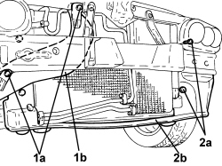

1084C34 ENGINE OIL COOLING RADIATOR - R + R
- Path
- Procedures > 10 ENGINE > 1084 ENGINE LUBRICATION > 1084C ENGINE OIL COOLING CIRCUIT > 1084C34 ENGINE OIL COOLING RADIATOR - R + R
- Kind
- repair procedure (removal / refitting; the operation number is the code)
- Applies to
- engines: 2.4 JTD 20v; all production periods
- Interactive page
- https://sloeber94.github.io/elrnDB-aBrrSpdr/en/#/946003031
Applies to: engines: 2.4 JTD 20v; all production periods
 Removing
Removing
 Refitting
Refitting- Position the vehicle on a lift.
Op. 7055B54 UNDER ENGINE PROTECTION/GUARD - R.R.
1. Undo the bolt (1a) and remove the cold air intake for the air filter (1b) after having released it from the air filter.
2. Undo the bolts (2a) and remove the radiator air duct (2b).

Applies to: engines: 2.4 JTD 20v; all production periods
Op. 5540B70 LEFT FRONT LIGHT CLUSTER WITH DIRECTION INDICATOR - R.R.
Op. 5540B71 RIGHT FRONT LIGHT CLUSTER WITH DIRECTION INDICATOR - R.R.
Op. 7210A15 R.R. FRONT WING/HEADLAMP HOUSING CROSSMEMBER
1. Undo the bolts (1a) and disconnect the engine oil inlet and outlet pipes (1b), engine oil cooling radiator side.

Applies to: engines: 2.4 JTD 20v; all production periods
1. Undo the bolts (1a) and remove the engine cooling radiator (1b).

Applies to: engines: 2.4 JTD 20v; all production periods
Refitting
Removing- Fit the engine oil cooling radiator in place and secure it using the bolts.
- Connect the engine oil inlet and outlet pipes, engine cooling radiator side and tighten the bolts.
Op. 7210A15 R.R. FRONT WING/HEADLAMP HOUSING CROSSMEMBER
Op. 5540B71 RIGHT FRONT LIGHT CLUSTER WITH DIRECTION INDICATOR - R.R.
Op. 5540B70 LEFT FRONT LIGHT CLUSTER WITH DIRECTION INDICATOR - R.R.
- Fit the radiator air duct in its housing and secure it using the bolts.
- Place the cold air intake for the air filter back in its housing and secure it using the bolts.